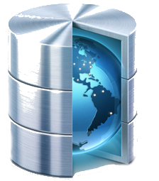

Dans ce projet, nous allons utiliser tous les outils mis à notre disposition afin de pouvoir gérer un annuaire
de profils d'utilisateurs, de projets et de rôles.
L’HyperText Markup Language est le format de données conçu pour représenter les pages web.
C’est un langage de balisage permettant d’écrire de l’hypertexte. HTML permet également de structurer
sémantiquement et de mettre en forme le contenu des pages, d’inclure des ressources multimédias dont des images,
des formulaires de saisie, et des programmes informatiques.
Pour le projet, HTML est le langage qui va permettre d'écrire le contenu de nos différentes pages web.
Ces pages seront les vues.
Cascading Style Sheets est un langage informatique qui décrit la présentation des documents HTML et XML.
Les standards définissant CSS sont publiés par le World Wide Web Consortium (W3C).
Pour le projet, CSS est le langage qui va permettre de décrire la présentation de nos vues.
JavaScript est un langage de programmation de scripts principalement employé dans les pages web interactives
mais aussi pour les serveurs.
Pour le projet, JS est le langage qui va permettre d'écrire les controleurs qui feront le lien entre les vues
et les modèles (Utilisateurs, Projets, Rôles).
AngularJS est un framework JavaScript libre et open-source2 développé par Google. Il est fondé sur l’extension du langage HTML par de nouvelles balises
Karma est un lanceur de tests Javascript, créé par l’équipe de développement du framework AngularJS.
Pour le projet, Karma va nous permettre de tester de façon efficace l'ensemble de notre application.
Bower est un gestionnaire de dépendances web
npm est le gestionnaire de paquets officiel pour Node.js
Node.js est une plateforme logicielle libre et évènementielle en JavaScript orientée vers les applications réseaux. Elle utilise la machine virtuelle V8 de Google.
Yeoman permet de démarrer un projet en quelques secondes, compiler automatiquement les fichiers,
détecter les erreurs Javascript, démarrer un serveur de dev, recharger la page lorsqu’une modification est détectée,
optimiser les images, minifier tous les fichiers (javascript, css, html), gérer les dépendances, lancer des tests,
Pour le projet, Yeoman est la structure de base de notre projet.